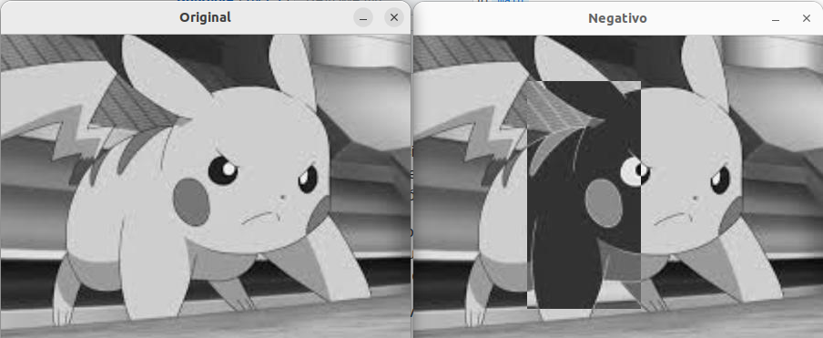
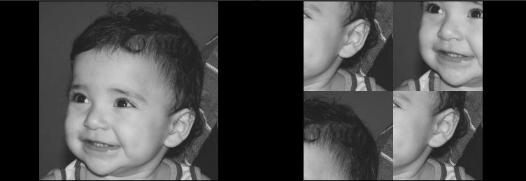
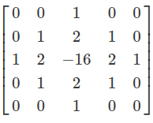
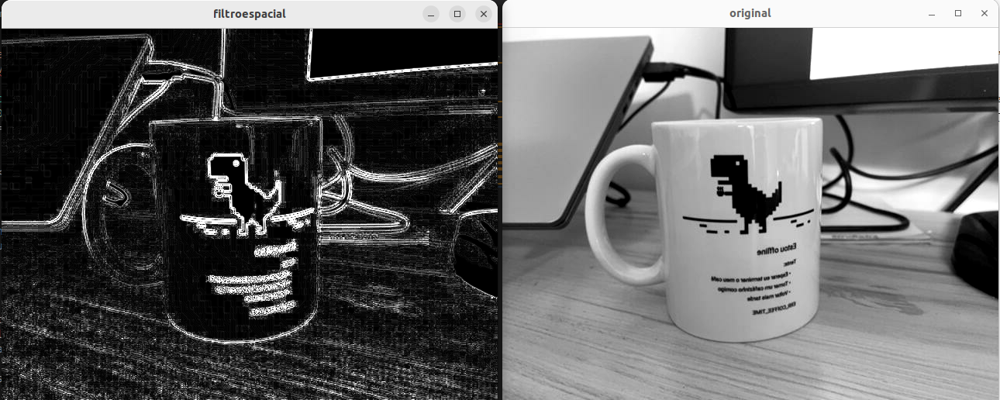
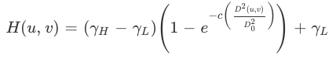
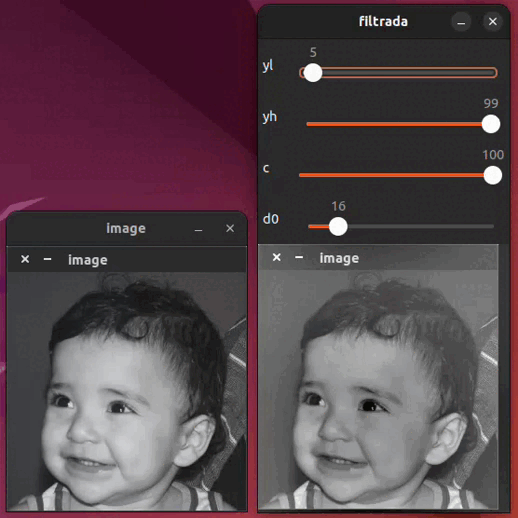
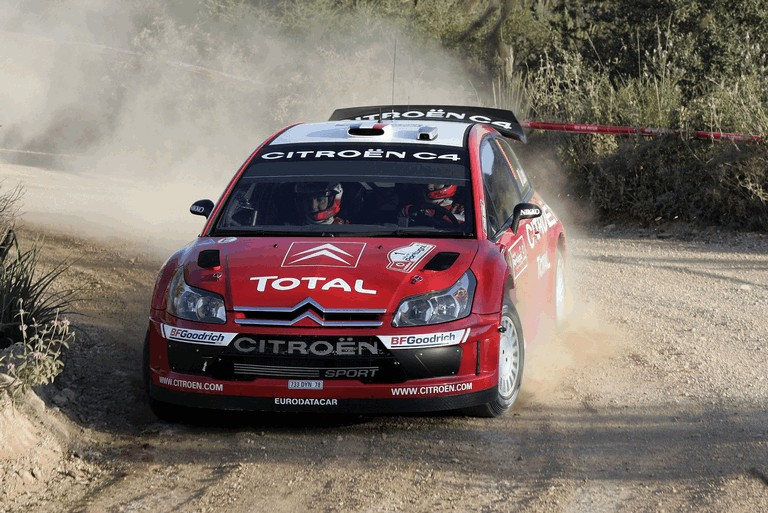
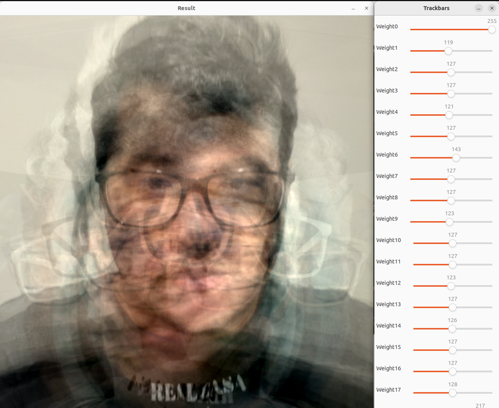

DCA0445 - Igor Brito e Micael Balza
Exercício 2.2.1
O objetivo deste exercício consiste em pegar dois pontos inseridos pelo usuário, desde que sejam dentro das dimensões da imagem selecionada, e com base nesses dois pontos formar uma área retangular com tons invertidos (negativo). Para construir o programa, foi utilizado como base o código pixels.cpp cedido pelo professor. Inicialmente, foi utilizado uma estrutura de dado de par para representar os pontos P1 e P2 e também suas coordenadas. Após lidas as posições x e y de cada um dos pontos, foi criada uma validação para que se garanta que o programa não funcione com pontos inválidos, como valores negativos e também coordenadas que estejam fora da figura escolhida. Para criar a área negativa, bastou-se alterar o preenchecimento dos pixels dentro da área demarcada pelos pontos P1 e P2 por seus valores multiplicados por -1.
Exercício 2.2.2
O objetivo deste exercício consistem em realizar a troca dos quadrantes nas diagonais de uma figura. O código usado como base para criação do programa foi o pixels.cpp, onde foi realizada a criação de novas variáveis matriciais no tamanho exato de cada quadrante quadrante da figura. Após a criação das matrizes que representam os quadrantes, foram utilizadas estruturas de loop for para copiar cada pixel de cada quadrante para as matrizes correspondentes. Em seguida foram utilizados outros loops para criar a nova imagem completa, substituindo com a ajuda de deslocamentos na variável de iteração do loop, os quadrantes. Resumindo, a imagem escolhida foi separada em quatro imagens menores, uma com cada quadrante da imagem original. Em seguida, uma nova imagem foi preenchida realizando a troca dos quadrantes nas diagonais.
Exercício 3.2.1
Caso existam mais de 255 objetos na cena, o processo de rotulação estará comprometido devido ao uso do tipo de dado como uchar, esse tipo é um char sem sinal, que representa com 8 bits valores de 0 a 255. Como a rotulação usa a representação de cor(tons de cinza) como ferramenta para distinguir os objetos na cena, caso o número seja maior que 255 não se pode garantir a correta rotulação. Uma forma de resolver este problema é mudar o tipo de dado usado para representar a cor, se por exemplo utilizarmos um unsigned int de 32 bits que representa valores de 0 a 65.535, aumentamos significativamente a capacidade de rotular mais objetos na imagem.
Exercício 3.2.2
Podemos dividir a resolução desse problema em 3 partes principais:
→ Remoção das bolhas que tocam nas bordas
→ Rotulação das bolhas
→ Contagem de buracos
 O trecho abaixo foi usado para percorrer as bordas da imagem, fixando o X e percorrendo o Y, varremos a borda direita e esquerda da imagem. A mesma lógica é seguida para percorrer as bordas superior e inferior, só que desta vez fixando o Y e percorrendo o X. Ao varrer as bordas da imagem e encontrando valores iguais a 255, encontramos uma bolha e que ela se encontra na borda, para apagar foi chamado a função
O trecho abaixo foi usado para percorrer as bordas da imagem, fixando o X e percorrendo o Y, varremos a borda direita e esquerda da imagem. A mesma lógica é seguida para percorrer as bordas superior e inferior, só que desta vez fixando o Y e percorrendo o X. Ao varrer as bordas da imagem e encontrando valores iguais a 255, encontramos uma bolha e que ela se encontra na borda, para apagar foi chamado a função floodFill pintando a cor de fundo.
// excluir objetos das bordas
// percorrer as bordas e execultar o floodfill, quando achar uma bolha que esta na bordar colorir com o fundo
nobjects=0;
for(int i=0; i(i,0) == 255){
// achou um objeto
p.x=0;
p.y=i;
// preenche o objeto com a cor de fundo
cv::floodFill(image,p,0);
}
if(image.at(i,height-1) == 255){
// achou um objeto
p.x=height-1;
p.y=i;
// preenche o objeto com a cor de fundo
cv::floodFill(image,p,0);
}
}
for(int j=0; j(0,j) == 255){
// achou um objeto
p.x=j;
p.y=0;
// preenche o objeto com a cor de fundo
cv::floodFill(image,p,0);
}
if(image.at(width-1,j) == 255){
// achou um objeto
p.x=j;
p.y=width-1;
// preenche o objeto com a cor de fundo
cv::floodFill(image,p,0);
}
}
 Foi feito a contagem e rotulação das bolhas em tons de cinza usando a função
Foi feito a contagem e rotulação das bolhas em tons de cinza usando a função floodFill, acrescentando 1 tom a mais para cada valor, ao final o contador será igual a cor da ultima bolha.
 Na etapa final o programa vai pintar a cor de fundo de branco, se diferenciando dos buracos em preto e das bolhas em cinza, dessa forma percorre-se a imagem em busta cos valores iguais a 0(buraco),um teste condicional é usado para garantir que uma bolha com 2 ou mais buracos não seja contada duas vezes. Ao final pinta-se de branco as bolhas já contadas com buraco, restando somente as sem buraco. O valor das contagens é feito subtraindo o total de bolhas das bolhas com buraco.
Na etapa final o programa vai pintar a cor de fundo de branco, se diferenciando dos buracos em preto e das bolhas em cinza, dessa forma percorre-se a imagem em busta cos valores iguais a 0(buraco),um teste condicional é usado para garantir que uma bolha com 2 ou mais buracos não seja contada duas vezes. Ao final pinta-se de branco as bolhas já contadas com buraco, restando somente as sem buraco. O valor das contagens é feito subtraindo o total de bolhas das bolhas com buraco.
// Agora pintamos o fundo da imagem, de outra cor
// Pintando de branco, o fundo vai se diferenciar dos buracos(preto), e das bolhas(cinza)
// O ponto 0,0 faz parte do fundo
p.x=0;
p.y=0;
cv::floodFill(image,p,255);
// Com o fundo branco podemos percorrer a imagem procurando buracos(pretos), e realizar a contagem.
int bolhas = 0;
for(int i=0; i(i,j) == 0 && (int)image.at(i,j-1) != 255){
bolhas++;
p.x=j;
p.y=i;
cv::floodFill(image,p,255);
p.x=j-1;
p.y=i;
cv::floodFill(image,p,255);
}
else if((int)image.at(i,j) == 0){
std::cout << "1pizza2";
p.x=j;
p.y=i;
floodFill(image,p,255);
}
}
}
Exercício 4.2.1
Neste exercício, foi proposto a realização de uma equalização em um vídeo capturado pela webcam do computador em tempo real, considerando o processamento das imagens em tons de cinza.
Sendo assim, foi tomado como base o código presente no arquivo histogram.cpp e após a captura das imagens pela webcam, foi feito uma conversão de cores da fonte
de imagem para uma escala de tons de cinza utilizando a função cvtColor(image, imageGrayscale, cv::COLOR_RGB2GRAY, 0); do opencv.
Logo em seguida, foi utilizada a função equalizeHist(imageGrayscale, imageGrayscale); que realiza a equalização do histograma da imagem.
Vale salientar que todo o processamento feito nas imagens ocorreu quadro a quadro do vídeo.
Como resultado, nota-se um aumento no contraste da imagem, mas que em algumas situações causa o efeito de falso contorno, como na imagem abaixo.
Repare, que durante a transição de uma cena escura para uma clara, é produzido um contorno no fundo da imagem que não existe, de fato.

Exercício 4.2.2
Utilizando o programa exemplos/histogram.cpp como referência disponível no site Introdução ao processamento digital de imagens com OpenCV
de Agostinho Brito, modificamos o código para implementar um detector de movimento por meio do histograma. Alguns pontos importantes podem ser descritos:→ O histograma calcula o número de ocorrências de determinada cor.
→ Foi escolhido então a componente da cor azul, uma componente só é suficiente para detectar o movimento
→ Ao detectar um movimento o programa deve avisar.
Desta forma a implementação usou o código que calculava o histograma de um video, frame a frame e atualizava o valor plotando o histograma,
foi implementado uma etapa de calibração que apartir do frame inicial + 1, calculava para o canal azul e salvava na variável calibration_threshold o menor valor dos 100 primeiros frames,
depois um fator de segurança de 95% diminuia ainda mais esse limiar.
Esta etapa de calibraçãose dá por conta do ruído existente na captura da imagem pela câmera, se o valor for muito pequeno pode existir uma falsa detecção de movimento.
Após ser calibrado o programa continua em loop, comparando o valor do histograma do frame atual com o valor do frame passado, se essa comparação for maior que calibration_threshold, foi detectado movimento.
Ultilizamos a função compareHist(histB, oldHist, cv::HISTCMP_CORREL), de forma que a comparação seja feita pela correlação entre os histogramas, retornando valores entre 0 e 1, com o primeiro para totalmente diferentes e o segundo para iguais.
O trecho abaixo refere-se como foi implementado esta parte de detecção:
// Vamos usar o canal azul para identificar o movimento
// Apenas uma componente de cor é suficiente
// primeiro capturamos a imagem estática para calibrar o programa, pois devido ao ruído da câmera podemos ter 'falsa detecção'
// calibração --> as primeiras 100 imagens serão usadas para calibrar
if(firstImage==true){
std::cout << std::endl << std::endl;
std::cout << "Deixe a camera estática para calibração " << std::endl;
std::cout << "As primeiras 100 imagens serão usadas " << std::endl;
}
if(firstImage == false){
hist_comp = compareHist(histB, oldHist, cv::HISTCMP_CORREL);
if(cont<100){
if(calibration_threshold > hist_comp) calibration_threshold = hist_comp;
cont++;
if(cont == 100){
calibration_threshold = calibration_threshold * 0.95; // 95% --> safety margin
std::cout << "Calibrado com limiar de: "<< calibration_threshold << std::endl;
}
}else{
if( hist_comp < calibration_threshold){
std::cout << "MOVIMENTO DETECTADO!!! \a" << std::endl;
}
}
}
Exercício 5.2
Neste exercício, foi pedido que se adicione um novo tipo de filtragem espacial, o filtro laplaciano do gaussiano. Como o nome sugere, o filtro antes de aplicar a detecção de bordas laplaciana, realiza uma suaviação de por meio do filtro gaussiano a fim de atenuar ruídos que podem atrapalhar na detecção de bordas. O kernel, ou máscara, utilizada na filtragem é representada por uma matriz 5x5 originada a partir da expressão abaixo.
As adaptações necessárias no código addwheited.cpp cedido pelo professor, consistem na adição da matriz do filtro laplaciano do gaussiano e também em uma nova opção do switch case para selecionar a aplicação do filtro. Ao apertar 'x' o usuário pode verificar o resultado como o obtido abaixo.
Exercício 7.2
Um filtro homomórfico é capaz de realizar a normalização do brilho e o aumento do contraste de uma imagem no domínio da frequência.
Aliando os conceitos de iluminância e reflectância à transformada de Fourier, foi possível separar essas componentes e trata-las ajustando os parâmetros
da função do filtro homomórfico no domínio da frequência.
Os conceitos de iluminância e reflectância podem ser definidos da seguinte forma:
- Iluminância: é a luz que é incidida e apresenta variações lentas (baixas frequências);
- Reflectância: é a luz que é refletida, é uma propriedade do material e apresenta variações rápidas (altas frequências).
A função do filtro do homomórfico pode ser representada pela equação abaixo: 
Para a implementação do filtro, foi utilizado como base o código dft.cpp fornecido pelo professor. Em seguida, a função do filtro homomórfico foi
portada para c++ substituindo o antigo filtro ideal que já estava implementado no código.
O calculo da função do filtro homomórfico leva em consideração, principalmente, os parâmetros gama de alta e baixa frequência e também a transformada discreta
de Fourier da imagem otimizada por meio do padding para que suas dimensões sejam as menores potências de 2 necessárias. A função homomófica implementada no código pode ser vista abaixo:
O resultado pode ser visto no gif abaixo:
Exercício 8.3
Foi implementado um programa chamado cannypoints.cpp com base nos programas canny.cpp e pontilhismo.cpp disponível em Introdução ao processamento digital de imagens com OpenCV
. A ideia é usar canny para detectar as bordas da imagem e de acordo com uns parâmetros de ajuste, melhorar a qualidade do desenho criado no formato pointilhista. Os parâmetros que podem ser ajustados por meio de uma Trackbar são:
- Threshold: Refere-se a o valor da limiar T1 e T2 do detectro de bordas de canny, configurados da forma que o valor de T2 é 3 vezes o valor de T1;
- Raio: Configura o tamanho do raio dos círculos que serão desenhados nos pontos onde o algoritmo de Canny detectar bordas.
- Jitter: Define uma janela aleatória de X pixels, onde o centro é deslocado, criando mais ou menos aleatoriedade no ponto;
O programa segue algumas etapas bem definidas, iniciando com a leitura da imagem, coleta das dimensões, conversão para tons de cinza e criação de uma matriz que será a imagem de saída com as mesmas dimensões da imagem de entrada preenchida com branco.
int main(int argc, char** argv){
int width, height;
image= imread(argv[1],cv::IMREAD_COLOR);
if(!image.data) cout << "Erro na abertura da imagem." << endl;
cvtColor(image,image2, cv::COLOR_BGR2GRAY);
imwrite("imggray.jpg", image2);
width=image.size().width;
height=image.size().height;
points = Mat(height, width, CV_8UC3, Scalar(255,255,255));
A imagem de entrada escolhida foi:
Como definido anteriormente, a imagem de entrada é convertida em tons de cinza, isso é nescessario para a entrada do detector de bordas de canny,
resultando na imagem abaixo:
São implementados ainda na função main o calculo do range com relação ao STEP
definido com valor igual a 4, e criação das 3 Trackbar.
Na primeira vez que o programa é executado, ou quando algum dos 3 parametros das Trackbar é alterado,
o programa re-execulta esta etapa que consiste em gerar uma imagem evidenciando as bordas detectadas por canny, esta imagem tem a mesma dimensão da imagem original, então:
O trecho descrito pode ser visto abaixo:
void on_trackbar_canny(int, void*){
Canny(image2, border, top_slider, 3*top_slider);
imshow("Canny Points", border);
random_shuffle(xrange.begin(), xrange.end());
for(auto i : xrange){
random_shuffle(yrange.begin(), yrange.end());
for(auto j : yrange){
x = i+rand()%(2*(top_jitter+1))-(top_jitter+1)+1;
y = j+rand()%(2*(top_jitter+1))-(top_jitter+1)+1;
if(border.at(i, j) != 0){ // encontrado uma região de borda por canny
colors = image.at(x,y);
circle(points, cv::Point(y,x),top_slider2, CV_RGB(colors[2],colors[1],colors[0]), -1, CV_8UC3);
}else{
colors = image.at(x,y);
circle(points, cv::Point(y,x),RAIO, CV_RGB(colors[2],colors[1],colors[0]), -1, CV_8UC3);
}
}
}
imshow("Canny_points output",points);
}
O exemplo da configuração pode ser visto no gif

Ao fechar o programa, a imagem final é salva no diretório, como a imagem abaixo:
Exercício 9.2
O k-means é um algoritmo de agrupamento não determinístico que consiste na atribuição de k centróides que representam agrupamentos e, ao longo de rodadas, a posição desses centróides
é recalculada com base na distância euclidiana para os pontos no espaço.
A posição relativa entre os pontos e cada centróide determina a qual grupo pertence pertence cada um dos pontos.
O algoritmo executa até que se atinja o número máximo de rodadas ou até que os centróides não tenham mais sua posição modificada de forma significativa.
Em síntese, o algoritmo do k-means determina um agrupamento inicial de dados e, ao ser executado, a região desses clusters se ajusta de maneira que os
indivíduos com maior semelhança sejam agrupados da melhor forma possível.
No exercício proposto, foi utilizado como base o código do k-means que foi cedido pelo professor e em seguida dois parâmetros foram alterados:
- nRodadas foi alterado seu valor de 8 para 1;
- o parâmetro KMEANS_PP_CENTERS foi alterado para KMEANS_RANDOM_CENTERS.
Em seguida, foi criado um loop para que o algoritmo de clusterização rodasse 10 vezes seguidas e gerasse a mesma quantidade de imagens para serem analisadas.
As imagens de entrada e a primeira execução sem a alteração dos parâmetros podem ser vistas abaixo:
Após a alteração dos parâmetros foi possível criar uma animação que mostra bem as diferenças entre as imagens geradas ao longo das 10 exercuções do k-means.
É possível notar que as imagens geradas possuem uma distinção significativa entre suas tonalidades que correspondem à mudança de posicionamento e atribuição de seus clusters.
Tal disparidade é observada devido à alteração do parâmetro KMEANS_PP_CENTERS para KMEANS_RANDOM_CENTERS, que faz com que a atribuição inicial dos centróides deixe de ser especifícica para que
se torne aleatória. Ou seja, o primeiro posicionamento dos centros é definido de maneira randômica e, a partir desse posicionamento aleatório, os centros são ajustados, gerando no
final da execução os resultados diferentes.
Projeto da unidade 3 - Reconhecimento de faces com eigenfaces
O objetivo
Como proposta de trabalho para a terceira unidade da disciplina de Processamento Digital de Imagens (PDI),
optou-se por executar um sistema de reconhecimento facial utilizando eigenfaces. A ideia do projeto é construir um dataset próprio,
transformar estas imagens em uma imagem só utilizando a técnica de eigenfaces, e por fim treinar o sistema utilizando rótulos de forma
que ele possa quando encontrar uma imagem nova comparar com o banco de dados e retornar a face conhecida. As eigenfaces utilizam como base um dos conteúdos
ministrados nas aulas de PDI, o PCA (Principal Component Analysis), então a ideia é expor uma aplicação prática do conteúdo visto em sala de aula.
Eigenfaces
Eigenfaces é uma abordagem utilizada por Sirovich e Kirby (1987) que visa gerar uma face média de acordo com um conjunto de imagens faciais e que tem aplicação na resolução de problemas de visão computacional relacionados a reconhecimento facial. As eigenfaces são conjuntos de eigenvectores utilizados, normalmente, para reconhecimento facial. De forma resumida, os eigenvectors, também conhecidos como vetores de características, são vetores associados a sistemas de equações lineares, estes vetores derivam da matriz de covariância formada pelas imagens de faces do conjunto de dados.
PCA
O PCA (Principal Component Analysis) é uma técnica de redução de dimensionalidade que é capaz de extrair informações relevantes das imagens. O PCA é aplicado para eigenfaces de maneira que consegue otimizar a quantidade de vetores de característica dando ênfase aqueles que possuem características pouco semelhantes, de maneira a diminuir a quantidade de informação semelhante e facilitar os cálculos.
Geração de eigenfaces
Em uma etapa de base, foi utilizado um algoritmo que é capaz de gerar uma eigenface dado um conjunto de imagens de entrada. O conjunto de dados inicial era composto por 25 imagens faciais com resolução 480x640 em posições variadas como na imagem abaixo:
O algoritmo gerador de eigenfaces em C++ realiza a leitura das imagens do conjunto de dados e as coloca em uma matriz, em seguida executa o PCA com base na matriz de imagens. Logo depois, os eigenvectores são encontrados.
As eigenfaces também podem ser modificadas a partir dos pesos do vetor de características que as compõem. No código utilizado neste trabalho, foram implementadas trackbars para o peso de cada eigenvector partindo da imagem média calculada anteriormente.
Os resultados obtidos com o processo geração de eigenfaces pode ser visualizado nas imagens abaixo:

É possível notar que, com a alteração dos pesos, o resultado se distancia da imagem média e tende a ressaltar características presentes em outra imagem.
Reconhecimento facial utilizando eigenfaces
O reconhecimento facial é composto por 3 etapas, começando pela transformação da imagem a ser analisada pelos passos descritos acima criando um vetor de face, posteriormente é aplicado uma técnica de classificação que compara a distância do novo vetor com os vetores do espaço que temos como dataset, e por fim estas distâncias são analisadas comparando com um threshold pré-estabelecido.
Se a nova face pertence a um indivíduo cujo o rosto foi armazenado no banco de dados, o valor retornado será menor que o threshold. Testa-se a distância para todas as faces armazenadas, se todos os testes falharem, trata-se de uma face desconhecida. O modelo de classificação utilizado foi o support vector machine(SVM), como trata-se de um modelo supervisionado as eigenfaces devem conter os rótulos para o treinamento.
As imagens do dataset são no formato pgm, em tons de cinza em 8bits, a imagem de entrada deve ser tratada para que tenha as mesmas dimensões e características.
Conclusão
O reconhecimento de faces utilizando eigenfaces é composto por várias etapas, é um método eficaz para quando temos pouca variação nas imagens, ou seja, existem condições parecidas no momento da aquisição das imagens de dataset e das imagens a serem reconhecidas. Durante o período da geração das eigenfaces quanto mais imagens forem usadas melhor pois variando um pouco as imagens com relação a perspectiva e enquadramento aumentamos a capacidade do programa de reconhecer uma face mesmo com pequenas variações. Durante a etapa de teste/validação com o nosso dataset, tivemos um problema na aquisição das imagens mesmo elas estando no mesmo formato, tamanho e escala de cinza das imagens da AT&T Database of Faces que retirado do kaggle e deu obteve sucesso.
Referências
Sirovich, Lawrence & Kirby, M. (1987). Low-Dimensional Procedure for the Characterization of Human Faces. Journal of the Optical Society of America. A, Optics and image science. 4. 519-24. 10.1364/JOSAA.4.000519.
BISSI, Thelry David. Reconhecimento Facial com os algoritmos Eigenfaces e Fisherfaces. Orientadora: Mauricio Cunha Escarpinati. 2018. TCC (Graduação) – Curso de Bacharelado em Ciência da Computação, Faculdade de Computação, Universidade Federal de Uberlândia, Minas Gerais, 2018. Disponível em: https://repositorio.ufu.br/bitstream/123456789/22158/3/ReconhecimentoFacialAlgotimos.pdf Acesso em: 15 Jul. 2022.
Eigenvector. Wolfram MathWorld, 2022. Disponível em: https://mathworld.wolfram.com/Eigenvector.html. Acesso em: 17/07/2022.
Reconhecimento de padrões através de Eigenfaces. Sinfic, 2022. Disponível em: http://www.sinfic.pt/SinficWeb/displayconteudo.do2?numero=44666. Acesso em: 16/07/2022.
Face Recognition with OpenCV. OpenCV, 2022. Disponível em: https://docs.opencv.org/3.4/da/d60/tutorial_face_main.html. Acesso em: 15/07/2022.
MALLICK, Satya. Eigenface using OpenCV (C++/Python). LearnOpenCV, 2018. Disponível em: https://learnopencv.com/eigenface-using-opencv-c-python/. Acesso em: 15/07/2022.
TAM, Adrian. Face Recognition using Principal Component Analysis. Machine Learning Mastery, 2021. Disponível em: https://machinelearningmastery.com/face-recognition-using-principal-component-analysis/. Acesso em: 15/07/2022.
Link contendo os códigos implementados nas atividades.